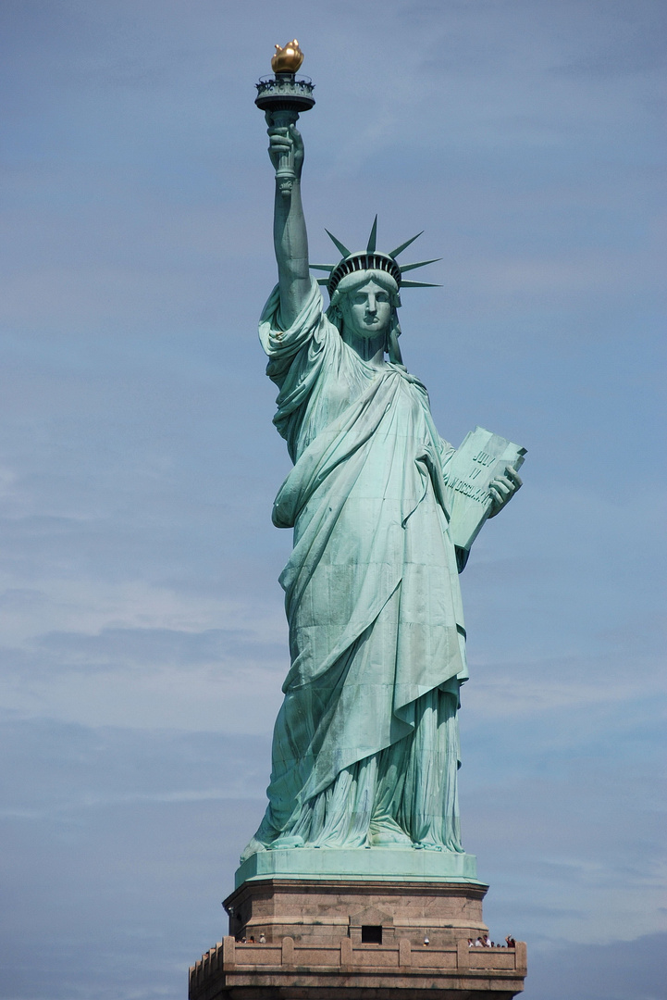

La Statue De La Liberté
La Statue de la Liberté, située sur Liberty Island à New York,
est l'un des monuments les plus célèbres au monde. Elle symbolise la liberté,
l'espoir et l'accueil des immigrants aux États-Unis.
Voici une description détaillée en plusieurs parties :
Caractéristiques principales :
Origine et Conception:
La statue, officiellement appelée “La Liberté éclairant le monde”,est un cadeau de la France aux États-Unis pour célébrer le centenaire de l'indépendance
américaine en 1876 et l'amitié entre les deux nations.
- Elle a été conçue par le sculpteur français Frédéric Auguste Bartholdi.
- La structure interne a été conçue par Gustave Eiffel, l'ingénieur célèbre pour la Tour Eiffel.
- Le financement a été assuré par des dons publics en France et aux États-Unis.
La statue a été inaugurée le 28 octobre 1886.
Description Artistique:
-
La Statue de la Liberté est une figure féminine, une personnification de la Liberté. Elle tient :
- Une torche dans sa main droite, représentant l'éclairage du monde.
- Une tablette dans sa main gauche, gravée de la date de la Déclaration d'Indépendance américaine : “July 4, 1776”.
Elle est faite de cuivre, ce qui lui a donné sa teinte verte actuelle due à l'oxydation.
Sa couronne comporte sept rayons, représentant les sept continents et océans,
symbolisant l'universalité de la liberté.Avec son piédestal, elle mesure 93 mètres (46 mètres pour la statue seule).
À ses pieds, des chaînes brisées symbolisent la fin de l'oppression.
Construction et Transport:

Reconnaissance mondiale :
Aujourd'hui, la Statue de la Liberté est un symbole mondial de liberté et d'espoir.Elle est visitée par des millions de personnes chaque année et figure au Patrimoine mondial de l'UNESCO depuis 1984.
Accessible par ferry, ses visiteurs peuvent monter jusqu'à la couronne pour profiter d'une vue spectaculaire sur New York Harbor.
La Statue de la Liberté reste une icône durable de l'idéal américain, mais aussi un rappel des luttes universelles pour la liberté et l'égalité.